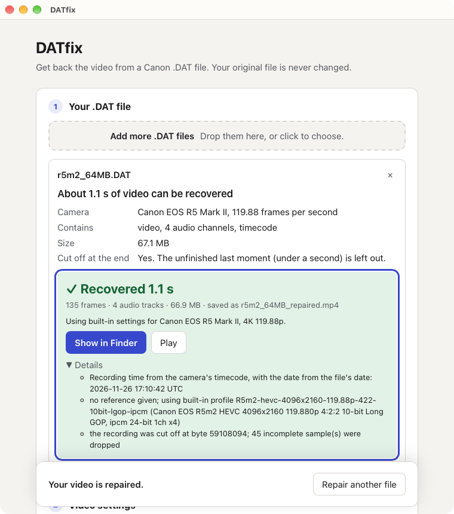

Repair a Canon .DAT video file
A Canon camera leaves a .DAT file instead of an .MP4 when a recording is cut off: the battery died, the card was removed, or the camera stopped with an error such as Err 70. DATfix is a free, open-source app for Mac and Windows that turns that .DAT into an MP4 you can play and edit, with no re-encoding and nothing uploaded.
Free. For macOS (signed and notarized) and Windows 10 or 11. All downloads, including the command-line tool.
Verified on the EOS R5 Mark II, EOS R5 and EOS R3. Also finds a recording on the card when the .DAT is 0 bytes or missing.
What happened to your video
A Canon camera records into a temporary .DAT file. When you stop recording, it writes the file's index and renames it to .MP4. If recording is cut off, the index is never written. The video is still in the .DAT, but no player or editor can open it.
Canon writes small recovery headers inside the .DAT while it records. DATfix reads them, rebuilds the index and writes a new MP4. It copies the video and audio unchanged and never changes your original file.
How to repair it
- Copy the card folder to your computer. Keep the card as it is until your video is back.
- Drop the
.DATinto DATfix. It reads the file and picks the video settings. - Press Repair. The new MP4 is saved next to the
.DAT.

Supported cameras
Verified means real .DAT files from that camera and mode were repaired and passed every check: frame count, a full error-free decode, equal audio and video length, and a look at frames from the middle and the end. Last full run: 26 November 2026, 36 files, 273 GB.
| Camera | Recording mode | Status |
|---|---|---|
| EOS R5 Mark II | XF-HEVC S, 4K 119.88p, 4 channels PCM | Verified, 15 files |
| EOS R5 | HEVC 4K 59.94p All-I, stereo PCM | Verified, 10 files |
| EOS R3 | HEVC 4K 29.97p All-I, no audio | Verified, 10 files |
| EOS R3 | HEVC 4K 59.94p All-I, stereo PCM | Verified, 1 file |
| EOS R5, R6, R6 Mark II | Modes with AAC audio | Expected |
| Cinema EOS C70, C80 | HEVC with AAC or PCM audio | Expected |
| EOS R, EOS M50 Mark II | Any | Not supported |
Full table with every mode. Have a .DAT from another camera? Send a sample.
Other ways to repair a .DAT
Paid tools and repair services also handle Canon .DAT files, and the free tool untrunc covers some Canon modes. The README has a dated comparison with prices checked on each vendor's page.
Questions
What is a .DAT file from a Canon camera?
It is a recording the camera did not finish. The camera writes video into a .DAT file and renames it to .MP4 when you press stop. If recording is cut off, the .DAT stays on the card with the video inside but without the index that players need.
How do I open a .DAT file from my Canon camera?
You cannot open it directly. Repair it with DATfix, then open the new MP4. Renaming the .DAT to .MP4 does not work, because the index is still missing.
My battery died while recording. Can I get the video back?
Usually yes. The .DAT holds everything up to the cut. DATfix leaves out only the unfinished last moment, which is under one second.
I removed the card while recording. Can I get the video back?
Often yes. Put the card in your computer and look for the .DAT. If it has a size, repair it with DATfix. If it is 0 bytes or missing, use Recover from a memory card in DATfix to scan the card. Stop using the card until your video is back.
My .DAT file is 0 bytes. Is the video gone?
Not always. A 0-byte .DAT holds no video itself, but the recording is often still on the card. DATfix can scan the card, or an image of it, and repair what it finds.
Which Canon cameras does DATfix support?
Verified on the EOS R5 Mark II, EOS R5 and EOS R3. Expected to work, but not yet tested on a real .DAT: EOS R6, R6 Mark II, C70 and C80 in some modes. Not supported: EOS R and EOS M50 Mark II, which write no recovery index.
Does DATfix upload my video or change the original file?
No. DATfix runs on your computer and works without an internet connection. It only reads the .DAT and always writes a new file. The video and audio are copied as they are, with no re-encoding.
Is DATfix free?
Yes. DATfix is free and open source under the MIT license, with no trial, watermark or file-size limit.
Will the repaired file open in my video editor?
Repaired files open in QuickTime and DaVinci Resolve 21.2 with all tracks and the camera's timecode. Premiere Pro and Final Cut Pro are not tested yet.